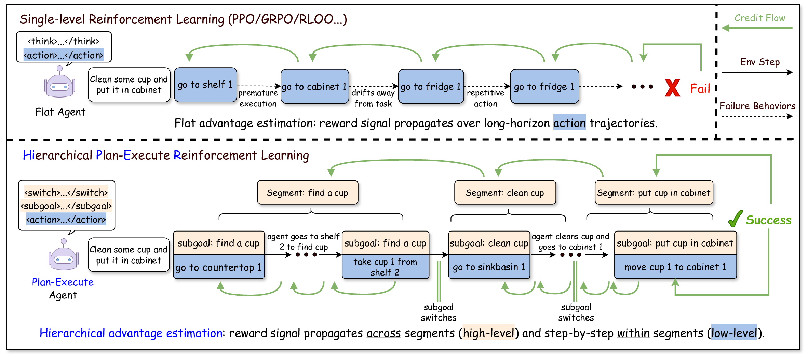

Flat RL blurs the cause of success.
Sparse final rewards make it hard to tell whether an agent chose the wrong subgoal, executed poorly, or switched too early.
Long-horizon LLM agent training
HiPER separates high-level planning from low-level execution and trains both levels with Hierarchical Advantage Estimation.
Core idea
Humans do not solve long-horizon tasks by blindly taking one small action after another. We plan, pursue subgoals, decide when to stick with them, and switch when needed.
HiPER makes that hidden structure explicit, then assigns credit to both the plan and the execution that follows it.
Sparse final rewards make it hard to tell whether an agent chose the wrong subgoal, executed poorly, or switched too early.
The agent decides whether to keep the current subgoal or switch, then acts under that subgoal while new observations arrive.
Hierarchical Advantage Estimation propagates learning signals within subgoal segments and across subgoal boundaries.
HiPER improves long-horizon agent training across ALFWorld and WebShop, with stronger final success rates and more stable training curves.

HiPER turns long-horizon interaction into an explicit Plan-Execute loop, then assigns credit separately to decisions made at the planning and execution levels.
Instead of optimizing a flat stream of actions, HiPER exposes the hierarchy already used by capable agents: a high-level policy selects or maintains a subgoal, while a low-level executor takes grounded actions until the next planning boundary.
Planning: the agent decides whether to continue the current objective or switch to a better one as observations arrive.
Execution: the agent converts each subgoal into environment actions, keeping local behavior tied to the current plan.
Hierarchical Advantage Estimation propagates feedback within each subgoal segment and across segment boundaries.

Appendix E of the paper illustrates how HiPER agents keep subgoals while they remain useful and switch when the task phase changes. Select a case to view the original trajectory grouped by contiguous subgoal segments.
@article{peng2026hiper,
title={HiPER: Hierarchical Reinforcement Learning with Explicit Credit Assignment for Large Language Model Agents},
author={Peng, Jiangweizhi and Liu, Yuanxin and Zhou, Ruida and Fleming, Charles and Wang, Zhaoran and Garcia, Alfredo and Hong, Mingyi},
journal={arXiv preprint arXiv:2602.16165},
year={2026}
}